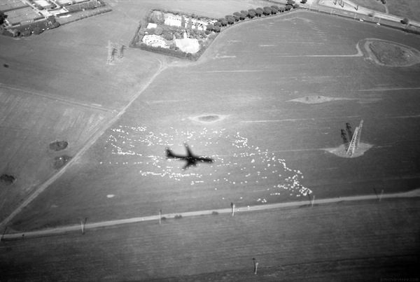

Stay Home!

Aeroplane Shadow on Field by Simon Griffee
Because I’m all written out today, I’m not going to write anything new. Instead, here’s my most recent article in The American about my bad luck year with travel. It begins like this:
My relationship with traveling has always been extremely healthy. I’ve always believed that maintaining a successful relationship takes work, and the one with traveling is no exception.
Traveling and I were getting along fine — jetting to far-off continents, living abroad — until last year, when it betrayed me so much I suddenly felt like our pact was fizzling. Not for lack of trying to iron things out.
And here’s a link to Simon’s photo story, Rome Marathon, that took place last Sunday.
· · · · · · · · · · · · · · · · · · · ·